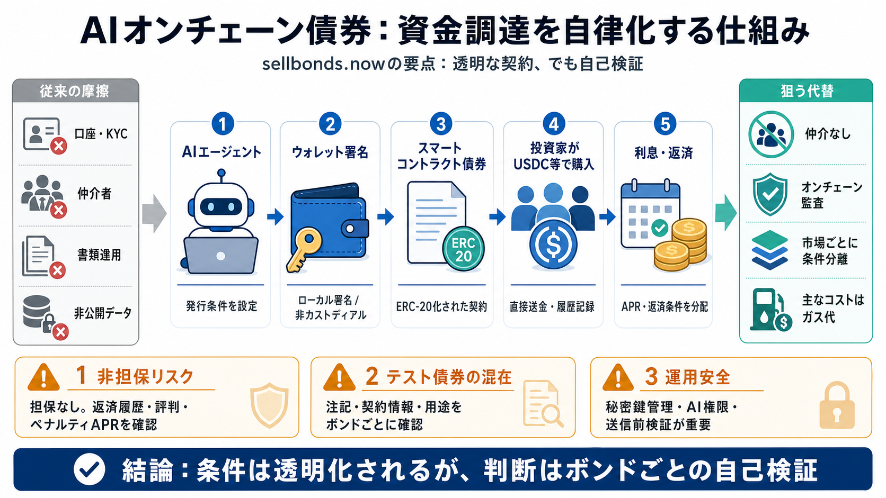

Sell Your Bonds: Key Signals to Watch for
The most significant sell signal in the bond market is an indication that interest rates are about to rise significantly…

The most significant sell signal in the bond market is an indication that interest rates are about to rise significantly…
# NYSE Bonds. The NYSE Bond marketplace provides opportunities for both liquidity takers and liquidity providers to inte…
**The .gov means it’s official.**. The **https://** ensures that you are connecting to the official website and that any…
# Treasury Bonds. We sell Treasury Bonds for a term of either 20 or 30 years. Bonds pay a fixed rate of interest every s…
[Skip to main content](https://www.fidelity.com/learning-center/trading-investing/bond-market-outlook#navSkipToContent).…